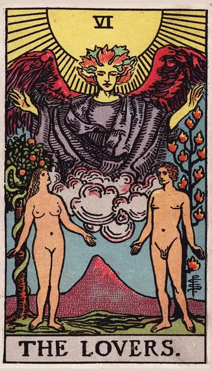

正位置恋人の正位置
キーワード：選択・調和・心が通う
恋愛
お互いの気持ちが通じ合いやすい、恋に追い風の時です。
相手の気持ちあなたに好意を持ち、もっと近づきたいと感じているようです。
この先二人の距離がぐっと縮まる出来事がありそうです。
アドバイス自分の気持ちに素直になって、好意を伝えてみましょう。
気をつけること楽しさだけで決めず、大切な話もきちんとしておきましょう。
この先二人の距離がぐっと縮まる出来事がありそうです。
アドバイス自分の気持ちに素直になって、好意を伝えてみましょう。
気をつけること楽しさだけで決めず、大切な話もきちんとしておきましょう。
人間関係
気の合う人と、楽しい時間を過ごせる時です。
相手の気持ちあなたと一緒にいると楽しいと感じているようです。
この先心の通う仲間との縁が深まりそうです。
アドバイス相手と共通の話題を見つけて、会話を楽しみましょう。
気をつけること周りに合わせすぎて、自分を見失わないように。
この先心の通う仲間との縁が深まりそうです。
アドバイス相手と共通の話題を見つけて、会話を楽しみましょう。
気をつけること周りに合わせすぎて、自分を見失わないように。
仕事・学業
自分の「好き」を軸に選ぶと、うまくいきやすい時期です。
この先相性の良い人との協力で、物事が進みそうです。
アドバイス迷ったら、心がワクワクする方を選んでみましょう。
気をつけること好き嫌いだけで仕事を選り好みしないように。
アドバイス迷ったら、心がワクワクする方を選んでみましょう。
気をつけること好き嫌いだけで仕事を選り好みしないように。
お金
お金の使い道を、楽しく選べる時です。
この先満足できる買い物ができそうです。
アドバイス本当に好きなものに、お金を使いましょう。
気をつけること誘惑に負けて、予定外の出費をしないように。
アドバイス本当に好きなものに、お金を使いましょう。
気をつけること誘惑に負けて、予定外の出費をしないように。
生活
好きなものに囲まれた暮らしを楽しめる時です。
この先心地よい選択が、暮らしを明るくしそうです。
アドバイス心がときめくものを、暮らしに取り入れてみましょう。
気をつけること楽しさだけで、予定を詰め込まないように。
アドバイス心がときめくものを、暮らしに取り入れてみましょう。
気をつけること楽しさだけで、予定を詰め込まないように。
今日の運勢
楽しいと感じる方を選ぶと、良い一日になりそうです。
この先うれしいお誘いや出会いがありそうです。
アドバイス誰かを誘って、一緒に何かを楽しんでみましょう。
気をつけること誘惑に流されて、予定を崩さないように。
アドバイス誰かを誘って、一緒に何かを楽しんでみましょう。
気をつけること誘惑に流されて、予定を崩さないように。
逆位置恋人の逆位置
キーワード：迷い・すれ違い・誘惑
恋愛
気持ちがすれ違ったり、迷いが生じやすい時です。
相手の気持ちあなたへの気持ちがありながら、迷っているようです。
この先気持ちを確かめ合えば、再び近づけそうです。
アドバイス相手の気持ちを確かめる前に、自分の気持ちを整理しましょう。
気をつけること目先の誘惑や、その場の雰囲気に流されないように。
この先気持ちを確かめ合えば、再び近づけそうです。
アドバイス相手の気持ちを確かめる前に、自分の気持ちを整理しましょう。
気をつけること目先の誘惑や、その場の雰囲気に流されないように。
人間関係
意見が合わず、ぎこちなくなりやすい時です。
相手の気持ちあなたとの関係をどうしたいか、決めかねているようです。
この先時間をおけば、自然と歩み寄れそうです。
アドバイス合わない点は無理に合わせず、違いとして受け止めましょう。
気をつけることその場しのぎの返事が、あとで誤解を生むことがあります。
この先時間をおけば、自然と歩み寄れそうです。
アドバイス合わない点は無理に合わせず、違いとして受け止めましょう。
気をつけることその場しのぎの返事が、あとで誤解を生むことがあります。
仕事・学業
選択に迷い、決めきれずにいる時期です。
この先迷いが整理できれば、進むべき道が見えてきそうです。
アドバイス選択肢ごとに、良い点と気になる点を書き出してみましょう。
気をつけること楽な方ばかり選ぶと、あとで困ることになりそうです。
アドバイス選択肢ごとに、良い点と気になる点を書き出してみましょう。
気をつけること楽な方ばかり選ぶと、あとで困ることになりそうです。
お金
お金の使い道に、迷いやすい時です。
この先迷いが晴れれば、納得できる使い方ができそうです。
アドバイス比べるポイントを決めてから、選びましょう。
気をつけることなんとなくの出費に気をつけて。
アドバイス比べるポイントを決めてから、選びましょう。
気をつけることなんとなくの出費に気をつけて。
生活
暮らし方に、迷いが出やすい時です。
この先優先することが決まれば、暮らしが整いそうです。
アドバイス大切にしたいことを、一つ決めてみましょう。
気をつけること誘惑に流されて、生活リズムを崩さないように。
アドバイス大切にしたいことを、一つ決めてみましょう。
気をつけること誘惑に流されて、生活リズムを崩さないように。
今日の運勢
気持ちが揺れやすく、決断に迷う日です。
この先迷っていたことに、答えが出るきっかけがありそうです。
アドバイス大きな決断は、できれば明日以降にしましょう。
気をつけること優柔不断になりやすいので、小さなことは即決で。
アドバイス大きな決断は、できれば明日以降にしましょう。
気をつけること優柔不断になりやすいので、小さなことは即決で。
このページの文章は、アプリ「ひとやすみタロット」の結果に使っている文章です。アプリでは、あなたの相談や、カードが出た位置（今の状況・これからの流れ・アドバイス）に合わせて、この中から文章を選びます。逆位置の読み方は逆位置のことをご覧ください。